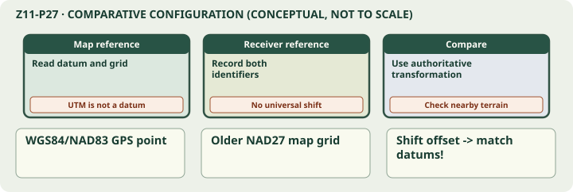

Z11-P27 · Navigation, weather and rescue · New manuscript
Understand map datums (WGS84 vs NAD27) and coordinate mismatch risk
Prevent hundreds-of-meters coordinate offsets caused by mixing historical NAD27 map grids with modern WGS84/NAD83 GPS receivers.
When it applies · Plotting smartphone or handheld GPS coordinates onto older printed USGS paper quadrangles.
Equipment · Paper topographic map (datum printed in bottom-left margin) and GPS/phone app settings.

Actions
- Read the exact horizontal datum and coordinate format in the map margin and receiver. UTM is a grid system, not a datum. Confirm both before plotting.[N01, N11]
- NAD27, NAD83 and WGS84 identifiers do not justify a guessed shift. Use an authoritative transformation when the reference frames differ; the displacement depends on location and reference.[N11]
- Record datum, format and grid zone as applicable. Cross-check the transformed position against identifiable terrain before using it for movement.[N01, N11, ED]
Failure recognition · Copying WGS84 smartphone coordinates onto a vintage 1965 NAD27 paper quadrangle in fog and mistaking the shifted dot for a safe trail crossing.[N01, N04, N07]
Verify · Confirm the datum printed on your paper map matches your GPS display setting before plotting or reporting grid coordinates.[N01, ED]
Stop or change course · Never trust a plotted grid point that contradicts visible surrounding terrain; verify datum settings and landmarks before moving.[N01, N03]
Evidence and editorial notes
- N01 · USGS · US Topo Maps for America (current web edition)
- Section: US Topo Maps > Coordinate Grids, Scale and Currency · Conditions: Map reading and trip planning in the United States
Support: USGS topographic maps provide elevation contours, hydrography, roads, land cover and scale/date metadata; check publication date because trails, roads and structures change over time.
Limitations: Historical topo sheets (such as 1965 Ely quadrangle) illustrate symbols only and never establish current routes or declination. · Conflicting evidence: None; aligns with USGS-MAP-R and NOAA-D.
Editorial note: Grounds map margin, scale, date and historical-excerpt limits in Z11. · Specialist reviewer: Cartography and navigation
Primary source · checked 2026-11-24 - N03 · USGS · What is a Topographic Map (current web edition)
- Section: What is a Topographic Map > Contours and Relief · Conditions: Matching three-dimensional terrain shapes to two-dimensional contour lines
Support: Closed contour rings denote peaks or depressions (hachured), V-patterns point uphill in valleys/drainages and wide spacing marks gentle slopes while tight spacing marks cliffs or steep grades.
Limitations: Dense forest canopy or snow drifts can obscure subtle terrain features shown on the map. · Conflicting evidence: None; core topographic terrain-association evidence.
Editorial note: Supports ridge, valley, saddle and handrail terrain-interpretation cards. · Specialist reviewer: Navigation and cartography
Primary source · checked 2026-11-24 - N04 · USGS · Are USGS Topographic Maps Copyrighted (current web edition)
- Section: Public Domain Status of USGS Topographic Maps · Conditions: Reproducing authentic USGS historical/current map excerpts for instruction
Support: USGS topographic maps are U.S. government works in the public domain; credit USGS, sheet name, scale, date and map ID clearly and state whether a historical sheet is for symbol study only.
Limitations: Commercial map overlays or private trail layers on top of USGS bases may carry separate copyright. · Conflicting evidence: None; governs Ely 1965 map excerpt attribution in Z11.
Editorial note: Ensures compliant map provenance and explicit historical-date cautions. · Specialist reviewer: Cartography and intellectual property review
Primary source · checked 2026-11-24 - N07 · NWS · Fog Safety (current web edition)
- Section: Fog Safety > Visibility Loss and Travel Hazards · Conditions: Dense fog, valley mist, sea fog and blowing-snow whiteout
Support: Fog and whiteout collapse visual landmarks and depth perception rapidly, causing disorientation and unintentional terrain/traffic hazards; halt exposed travel early and rely on verified checkpoints or stay put.
Limitations: Compass bearings alone cannot reveal hidden cliffs, thin ice or drop-offs in zero visibility. · Conflicting evidence: Aligns with B014-P11 whiteout guidance.
Editorial note: Supports whiteout/fog stop thresholds and short-leg navigation boundaries. · Specialist reviewer: Meteorology and search and rescue
Primary source · checked 2026-11-24 - N11 · USGS · US Topo Maps for America (current web edition)
- Section: US Topo map metadata; map collar · Conditions: Consumer map and receiver; exact horizontal datum and coordinate format
Support: Check the horizontal reference and coordinate format before plotting. Do not assume mixed datums identify the same point.
Limitations: Datum transformation is location- and frame-dependent; use authoritative conversion. · Conflicting evidence: See A01 cross-zone review.
Editorial note: Use only within the stated conditions. · Specialist reviewer: Cartography and dispatch
Primary source · checked 2026-11-24
Source lineage · USGS US Topo and cartography; new manuscript · Classification · New manuscript.